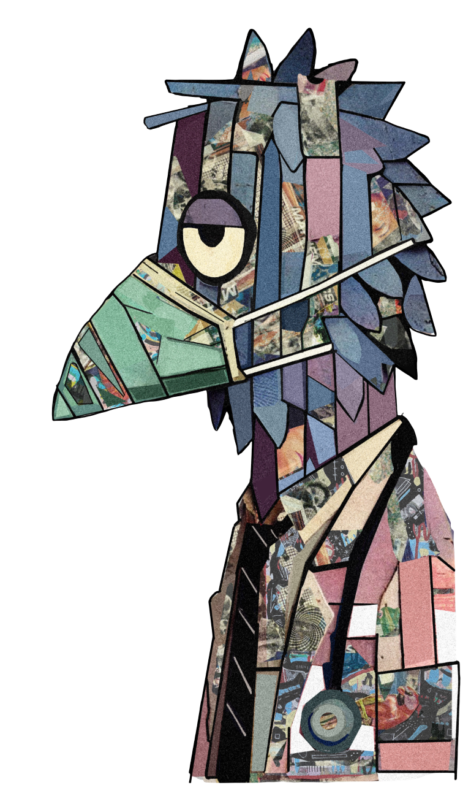

A dystopian animated satire blending claymation-inspired and paper-cut aesthetics to critique consumerism, systemic exploitation, and the absurdity of hypercapitalism. Check back for updates.
Auditory Shadows is an interactive sound installation that plays with convolution, spatialization, and feedback delay networks to explore perception, grief, and non-linear memory. Inspired by the way three-dimensional objects cast shadows in lower dimensions, this project reimagines how sound might leave traces or ‘shadows’ in a multidimensional space, creating an immersive and introspective auditory experience.
A strategy game inspired by real-world bird behaviors and ecosystems, designed to reflect interdependence, resource-sharing, and the tensions between competition and collaboration. Check back for updates.